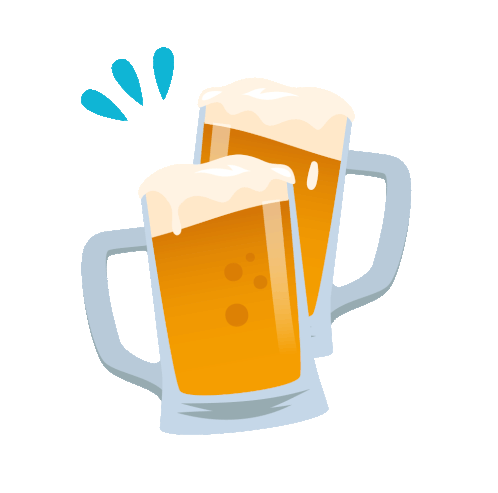
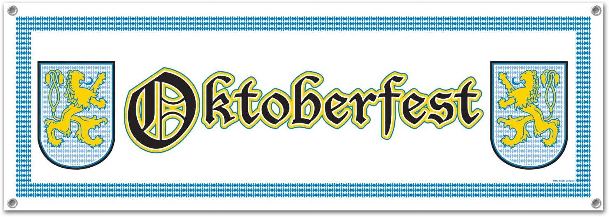

Go Home ===>
 Not all that unknown but certainly enjoyable, the fall festival known as Oktoberfest yearly in late September to early October. The Clanking mugs will send you to the wiki page if you want more well written information. Either way, it is a Bavarian volksfest or German festival combining beer/wine and funfair/carnivals mainly known for excessive beer consumption here in the US. If you don't want to click the mugs, here is the first section from wikipedia:
Oktoberfest is the world's largest Volksfest, featuring a beer festival and a travelling carnival, and is held annually in Munich, Bavaria, from mid- or late-September to the first Sunday in October, with more than six million international and national visitors attending the event. Locally, it is called d'Wiesn, after the colloquial name for the fairgrounds, Theresienwiese. Oktoberfest is an important part of Bavarian culture, having been held since the year 1810. Other cities across the world also hold Oktoberfest celebrations that are modeled after the original Munich event. During the event, large quantities of Oktoberfest Beer are consumed: in 2014, 7.7 million litres (2,000,000 US gal) were served. Visitors also enjoy numerous attractions, such as amusement rides, side stalls, and games. There is also a wide variety of traditional foods available. Oktoberfest originally took place in the 16-day period leading up to the first Sunday in October. In 1994, this longstanding schedule was modified in response to German reunification. As a result, if the first Sunday in October falls on the 1st or the 2nd, then the festival runs until 3 October (German Unity Day). Thus, the festival now runs for 17 days when the first Sunday is 2 October and 18 days when it is 1 October. In 2010, the festival lasted until the first Monday in October (4 October), to mark the event's bicentennial.